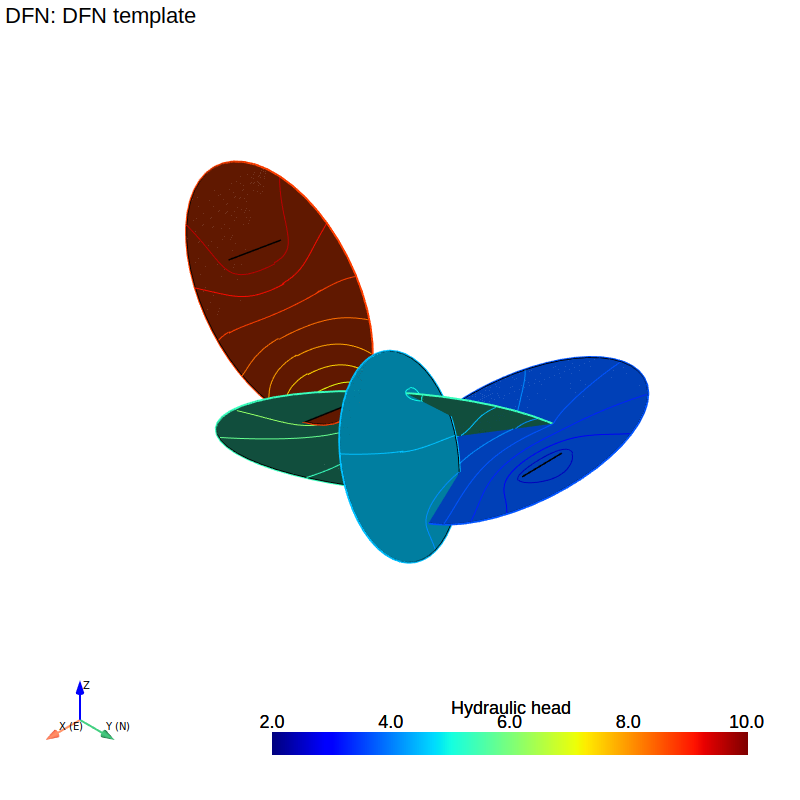

Template#
This is a working template of an andfn model that produces the following plot:
{kind=link}
"""
Notes
-----
This is a template file to demonstrate how to use the andfn package.
The andfn package is a python package for solving groundwater flow in Discrete Fracture Networks (DFN).
Author: Erik Toller
Date: 2025-01-21
Repository: https://github.com/eriktoller/andfn
"""
# Import the andfn package and numpy
import andfn
import numpy as np
if __name__ == "__main__":
print("\n")
print("--------------------------------------------------------------------")
print("\t ASSIGN FRACTURES AND OTHER ELEMENTS")
print("--------------------------------------------------------------------")
ncoef = 10
nint = ncoef * 2 # number of coefficients and integration points
# Crete 4 fractures
frac0 = andfn.fracture.Fracture(
"alplha",
1,
radius=0.7,
center=np.array([-0.7, 0.1, -0.3]),
normal=np.array([-0.2, 0.4, -0.9]),
ncoef=ncoef,
nint=nint,
)
frac1 = andfn.fracture.Fracture(
"beta",
1,
radius=1.0,
center=np.array([-0.6, -0.61, -0.7]),
normal=np.array([-0.6, -0.5, 0.6]),
ncoef=ncoef,
nint=nint,
)
frac2 = andfn.fracture.Fracture(
"gamma",
1,
radius=0.5,
center=np.array([0.0, 0.0, -0.1]),
normal=np.array([0.3, -0.8, -0.4]),
ncoef=ncoef,
nint=nint,
)
frac3 = andfn.fracture.Fracture(
"delta",
1,
radius=0.7,
center=np.array([-0.1, -1.0, 0.3]),
normal=np.array([0.5, 0.0, 0.0]),
ncoef=ncoef,
nint=nint,
)
# Create 2 constant head lines
const_head0 = andfn.const_head.ConstantHeadLine(
"const_head0", np.array([0.3 + 0.2j, 0.2 - 0.3j]), 10.0, frac3, ncoef, nint
)
const_head1 = andfn.const_head.ConstantHeadLine(
"const_head1", np.array([-0.4 - 0.1j, -0.3 - 0.3j]), 2.0, frac0, ncoef, nint
)
frac3.add_element(const_head0) # add constant head line "const_head0" to fracture 3
frac0.add_element(const_head1) # add constant head line "const_head1" to fracture 0
print("\n")
print("--------------------------------------------------------------------")
print("\t CREATE THE DFN AND ADD THE FRACTURES")
print("--------------------------------------------------------------------")
dfn = andfn.DFN("DFN template") # create a DFN object
dfn.add_fracture([frac0, frac1, frac2, frac3]) # add fractures to the DFN object
print("\n")
print("--------------------------------------------------------------------")
print("\t CALCULATE INTERSECTIONS AND GET ELEMENTS")
print("--------------------------------------------------------------------")
dfn.get_fracture_intersections(ncoef, nint) # calculate the fracture intersections
print("\n")
print("--------------------------------------------------------------------")
print("\t SOLVE THE DFN")
print("--------------------------------------------------------------------")
dfn.solve() # solve the DFN
print("\n")
print("--------------------------------------------------------------------")
print("\t PLOT THE RESULTS")
print("--------------------------------------------------------------------")
p1 = dfn.initiate_plotter() # initiate the plotter
dfn.plot_fractures(p1) # plot the fractures
dfn.plot_elements(p1) # plot the elements
dfn.plot_fractures_head(p1) # plot the hydraulic head in the fractures
p1.show() # show the plot